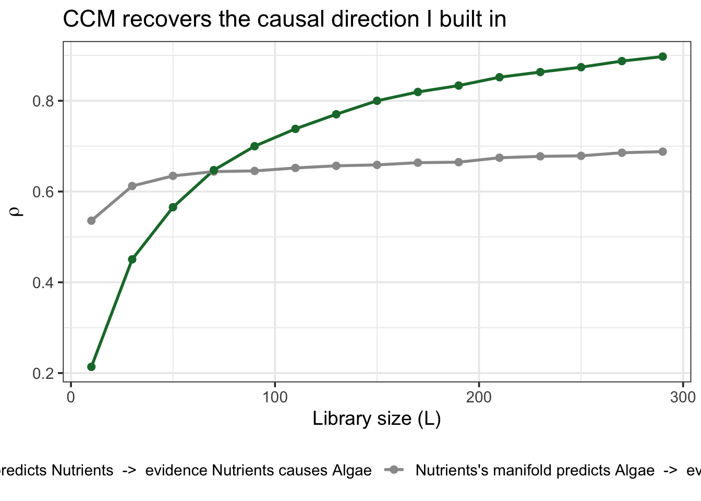
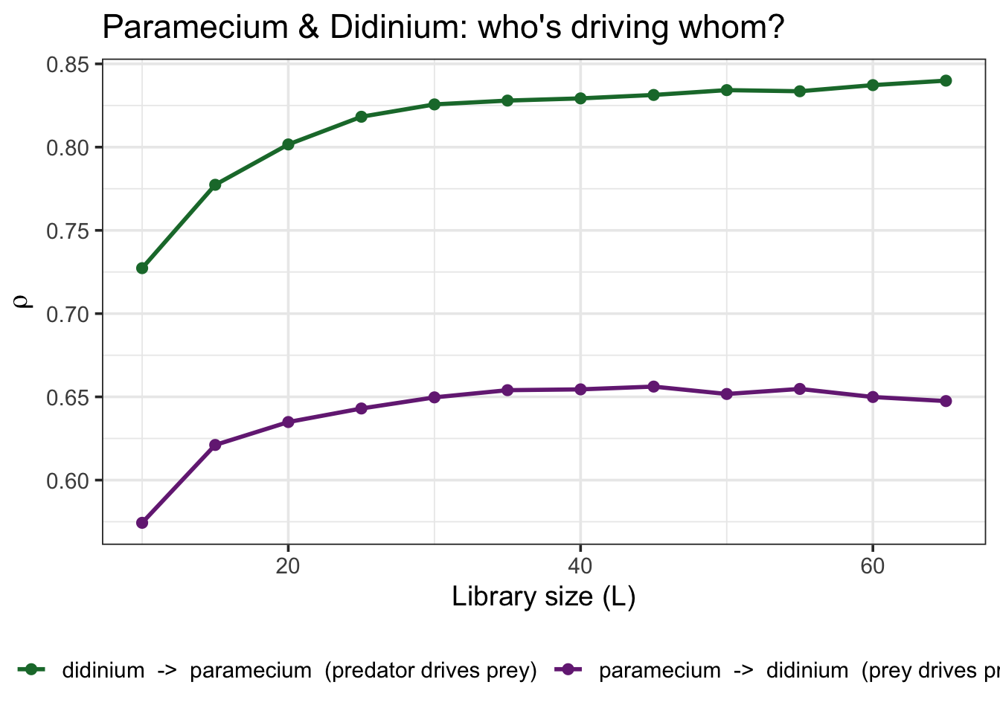
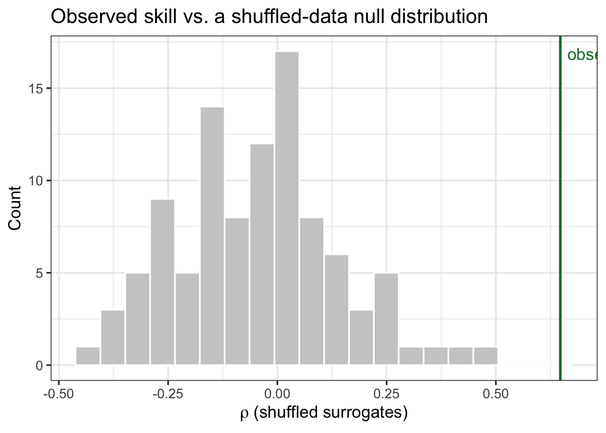
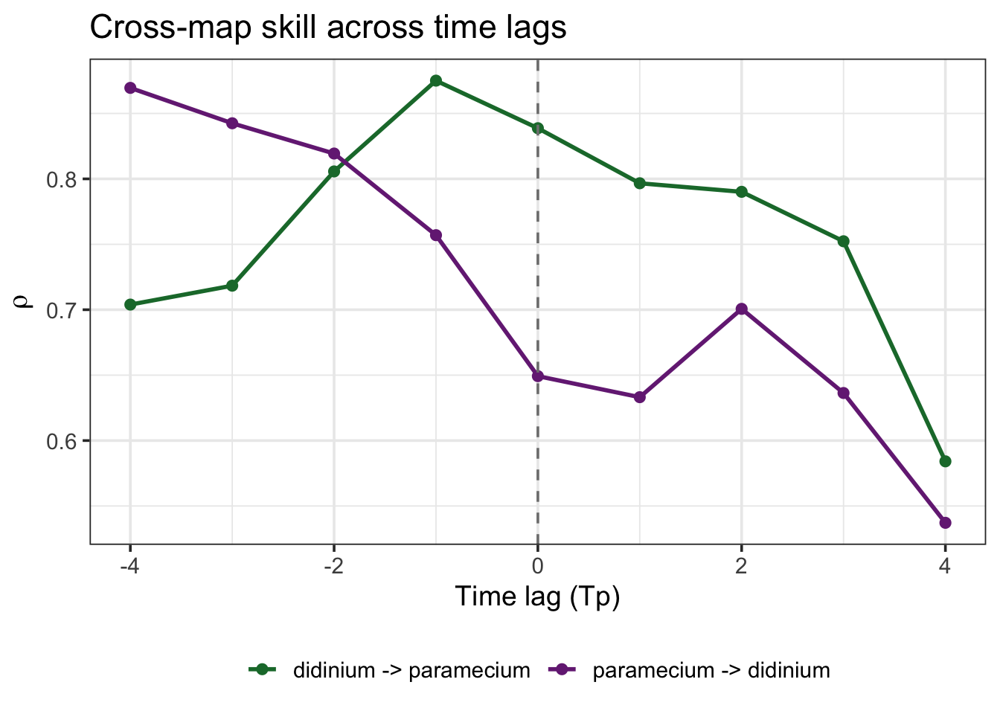

Convergent Cross Mapping: does A actually drive B?
This is the second of two notebooks. The first one covered reconstructing a single variable’s dynamics with Simplex and S-map. Here I ask a different question: given two time series, can I tell whether one actually drives the other?
The question CCM answers
- You’ve got two time series — say, a nutrient and an algal population, or a predator and its prey.
- They’re correlated. Q: does that mean one causes the other?
- A: Not necessarily — and the usual fixes (Granger causality, adding lags in a regression) assume the variables are separable: that you could, in principle, isolate \(X\)’s effect from everything else going on.
- In a tightly coupled ecological system, that assumption is often false. Convergent Cross Mapping (CCM) (Sugihara et al. 2012) was built specifically for non-separable, dynamically coupled variables (Chang et al. 2017).
Does CCM need to control for other variables?
This is a real question people ask, and the honest answer has two parts.
Part 1 — no, not the way regression does.
- Multiple regression controls for confounders by explicitly adding them as covariates, because it treats each variable’s contribution as separable and additive.
- CCM doesn’t need that: if two variables are part of the same dynamical system, Takens’ theorem guarantees that each variable’s own lagged reconstruction already contains a “shadow” of everything it interacts with — including variables you never measured.
- So you’re not omitting a confounder by leaving it out of the embedding; its influence is already folded into the variable you did measure.
Part 2 — but CCM has its own failure modes, and they need their own fixes.
- Synchrony from strong one-way forcing. If \(X\) drives \(Y\) very strongly, \(Y\)’s dynamics can collapse onto \(X\)’s so tightly that cross mapping looks bidirectional even though the true influence only runs one way.
- Shared external drivers. If \(X\) and \(Y\) don’t interact at all, but both are pushed by the same external cycle (e.g. season), they can still cross-map each other successfully — a real confound, just not one you fix by “adding a covariate.”
- Ye et al. (2015) give you the actual fix for both: look at cross-map skill as a function of an added time lag, not just at lag zero. I’ll do exactly that below.
The core mechanic: cross mapping
- Reconstruct each variable’s own manifold (same lagged-embedding idea as the previous notebook).
- If \(X\) causes \(Y\), then information about \(X\) gets written into \(Y\)’s dynamics — so \(Y\)’s manifold should be able to “recover” \(X\).
- The direction rule (the confusing part): to ask “does X cause Y?”, you cross-map using Y’s manifold to predict X — not the other way round. High, convergent skill there is your evidence for \(X \rightarrow Y\).
- Convergence is the other half of the name: as you give the cross-mapping more library data (longer time series), skill should keep improving if the link is real. A spurious link (e.g. two unrelated series that happen to correlate) won’t converge.
Step 1 — a sanity check where I already know the answer
Before trusting CCM on real data, I want to see it recover a causal link I built in myself. I’ll simulate a nutrient pool driving an algal population strongly, with almost no feedback the other way:
Code
set.seed(42)
n <- 400
b_algae_on_nutrients <- 0.02 # algae barely affects nutrients
b_nutrients_on_algae <- 0.32 # nutrients strongly drive algae -> TRUE causal link: Nutrients -> Algae
Nutrients <- numeric(n); Algae <- numeric(n)
Nutrients[1] <- 0.4; Algae[1] <- 0.2
for (t in 2:n) {
Nutrients[t] <- Nutrients[t-1] * (3.8 - 3.8 * Nutrients[t-1] - b_algae_on_nutrients * Algae[t-1])
Algae[t] <- Algae[t-1] * (3.5 - 3.5 * Algae[t-1] - b_nutrients_on_algae * Nutrients[t-1])
Nutrients[t] <- pmin(pmax(Nutrients[t], 1e-6), 0.9999)
Algae[t] <- pmin(pmax(Algae[t], 1e-6), 0.9999)
}
sim_data <- tibble(time = 1:n, Nutrients = Nutrients, Algae = Algae)Now I run CCM in both directions and watch whether skill converges as I hand it more data:
Code
ccm_sim <- CCM(
dataFrame = sim_data, E = 3, columns = "Nutrients", target = "Algae",
libSizes = "10 300 20", sample = 100, seed = 1, showPlot = FALSE
)
ccm_sim |>
pivot_longer(-LibSize, names_to = "direction", values_to = "rho") |>
mutate(direction = recode(direction,
"Algae:Nutrients" = "Algae's manifold predicts Nutrients -> evidence Nutrients causes Algae",
"Nutrients:Algae" = "Nutrients's manifold predicts Algae -> evidence Algae causes Nutrients"
)) |>
ggplot(aes(x = LibSize, y = rho, color = direction)) +
geom_line(linewidth = 1) +
geom_point(size = 2) +
scale_color_manual(values = c("#1B7837", "grey60")) +
labs(x = "Library size (L)", y = expression(rho), color = NULL,
title = "CCM recovers the causal direction I built in") +
theme_bw(base_size = 14) +
theme(legend.position = "bottom")
Q: which curve should win, and does it? A: “Algae’s manifold predicts Nutrients” should climb and convergence — because Nutrients truly drives Algae — while the reverse should stay flat and low. That’s what the plot shows. Good: CCM recovers a direction I already know is right.
Step 2 — real predator-prey data
Now the real test: a classic laboratory microcosm, Paramecium (prey) and Didinium (its predator), the same dataset used by Ye et al. (2015).
time paramecium didinium
1 0.00 15.65 5.76
2 0.52 53.57 9.05
3 1.01 73.34 17.26
4 1.54 93.93 41.97
5 2.04 115.40 55.97
6 2.51 76.57 74.91Code
ccm_real <- CCM(
dataFrame = paramecium_didinium, E = 3, columns = "paramecium", target = "didinium",
libSizes = "10 65 5", sample = 200, seed = 1, showPlot = FALSE
)
ccm_real |>
pivot_longer(-LibSize, names_to = "direction", values_to = "rho") |>
mutate(direction = recode(direction,
"didinium:paramecium" = "paramecium -> didinium (prey drives predator)",
"paramecium:didinium" = "didinium -> paramecium (predator drives prey)"
)) |>
ggplot(aes(x = LibSize, y = rho, color = direction)) +
geom_line(linewidth = 1) +
geom_point(size = 2) +
scale_color_manual(values = c("#1B7837", "#762A83")) +
labs(x = "Library size (L)", y = expression(rho), color = NULL,
title = "Paramecium & Didinium: who's driving whom?") +
theme_bw(base_size = 14) +
theme(legend.position = "bottom")
Q: what does it mean if both curves converge? A: Real, reciprocal causation — exactly what a predator-prey pair should look like: prey abundance drives predator growth (more food, more offspring) and predator abundance drives prey decline (more mouths, fewer survivors). Unlike the synthetic example, this is genuinely bidirectional, and both curves climbing is the correct result, not a red flag.
Is it real, or could 65 points show this by chance?
Convergence is reassuring, but I can also ask directly: is the observed cross-map skill higher than I’d get from a version of the data with the same basic statistics but no real dynamic link? I scramble one series (destroying its dynamics, keeping its distribution) and rerun CCM many times to build a null distribution:
Code
set.seed(1)
n_surr <- 100
surrogates <- SurrogateData(paramecium_didinium$didinium, method = "random_shuffle", num_surr = n_surr)
null_rho <- map_dbl(seq_len(n_surr), function(i) {
d <- paramecium_didinium
d$didinium <- surrogates[, i]
out <- CCM(dataFrame = d, E = 3, columns = "paramecium", target = "didinium",
libSizes = "65 65 1", sample = 100, seed = 1, showPlot = FALSE)
out$`didinium:paramecium`[1]
})
observed_rho <- ccm_real$`didinium:paramecium`[ccm_real$LibSize == max(ccm_real$LibSize)]
tibble(rho = null_rho) |>
ggplot(aes(x = rho)) +
geom_histogram(bins = 20, fill = "grey80", color = "white") +
geom_vline(xintercept = observed_rho, color = "#1B7837", linewidth = 1) +
annotate("text", x = observed_rho, y = Inf, label = "observed", vjust = 2,
hjust = -0.1, color = "#1B7837") +
labs(x = expression(rho~"(shuffled surrogates)"), y = "Count",
title = "Observed skill vs. a shuffled-data null distribution") +
theme_bw(base_size = 14)
Code
p_value <- mean(null_rho >= observed_rho)
p_value[1] 0The observed skill sits well outside the shuffled-data null distribution (p < 0.01) — this isn’t a pattern 65 noisy points could produce by chance.
Does the direction hold up across time lags?
Per Ye et al. (2015), the sharper test for real (vs. spurious/synchrony-driven) causality is whether cross-map skill peaks at a negative lag in both directions — meaning each variable’s past predicts the other’s future, not the reverse:
Code
lags <- -4:4
ccm_by_lag <- map_dfr(lags, function(tp) {
out <- CCM(dataFrame = paramecium_didinium, E = 3, Tp = tp,
columns = "paramecium", target = "didinium",
libSizes = "65 65 1", sample = 100, seed = 1, showPlot = FALSE)
tibble(Tp = tp,
`paramecium -> didinium` = out$`didinium:paramecium`[1],
`didinium -> paramecium` = out$`paramecium:didinium`[1])
})
ccm_by_lag |>
pivot_longer(-Tp, names_to = "direction", values_to = "rho") |>
ggplot(aes(x = Tp, y = rho, color = direction)) +
geom_line(linewidth = 1) +
geom_point(size = 2) +
geom_vline(xintercept = 0, linetype = "dashed", color = "grey50") +
scale_color_manual(values = c("#1B7837", "#762A83")) +
labs(x = "Time lag (Tp)", y = expression(rho), color = NULL,
title = "Cross-map skill across time lags") +
theme_bw(base_size = 14) +
theme(legend.position = "bottom")
Both directions peak at negative lags — each species’ past state predicts the other’s future, not the reverse. That’s the signature of genuine bidirectional causation, not one variable being dragged along by strong one-way forcing.
Take-home
- CCM tests causality between dynamically coupled variables by asking whether one variable’s reconstructed manifold can “recover” the other — and whether that skill converges with more data.
- The direction is the confusing part: evidence for \(X \rightarrow Y\) comes from \(Y\)’s manifold predicting \(X\), not the other way round.
- You don’t need to add covariates the way regression does — coupling is already embedded in each variable’s own dynamics.
- You do still need to watch for synchrony (strong one-way forcing mimicking bidirectionality) and shared external drivers (like season) — and the fix is checking convergence and lag structure, not adding a covariate list (Ye et al. 2015).
- Real, reciprocal predator-prey coupling (like Paramecium/Didinium) should — and does — show convergent CCM in both directions.
Further reading
- Sugihara et al. (2012) — the original CCM paper, introducing the method used throughout this notebook.
- Ye et al. (2015) — the lag-scanning method used above, applied in the original paper to this same predator-prey system plus ice-core CO₂/temperature and sardine/anchovy/SST data.
- Time Series Analysis Handbook, ch. 6 — Convergent Cross Mapping — more worked examples, including where CCM correctly finds no causality (e.g. spurious correlations).
- Does convergent cross mapping require you to control for other variables? (CrossValidated) — the discussion this notebook’s “Does CCM need to control for other variables?” section is answering.
-
Chang et al. (2017) — the
rEDMwalkthrough referenced in the first notebook.